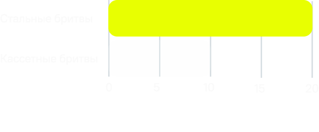
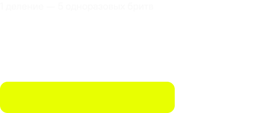

как выглядит
осознанное бритье?

Бородулина Марина
Время чтения: 2 мин
Коротко
Одноразовые бритвы зачастую нужно покупать снова и снова. Кассеты стоят дорого, а станок быстро прихоит в негодность. Все это превращается в дорогую и не экологичную привычку
Стальная бритва служит годами, лезвия стоят копейки, мусора почти нет, а качество бритья — выше. После первого бритья стальной бритвой к одноразовым возвращаться не захочется.
Факты
Стальная бритва не подойдет, если...
Если у вас тонкая и чувствительная кожа, стальная бритва может вызвать раздражение из‑за очень острого лезвия. В дорожных или экстремальных условиях она повышает риск порезов. В таких случаях удобнее использовать одноразовую бритву
Цифры

По сравнению с кассетными экономия от стальных бритв больше в 5–10 раз

Стальная бритва — замена 100–150 одноразовых

Привыкание к бритве занимает 2–3 бритья